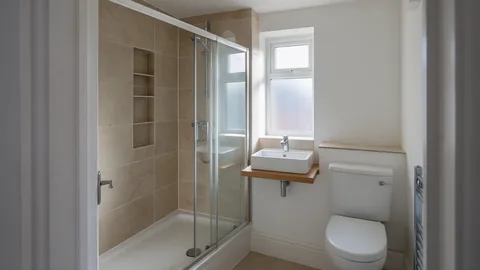
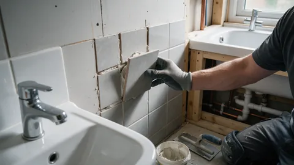
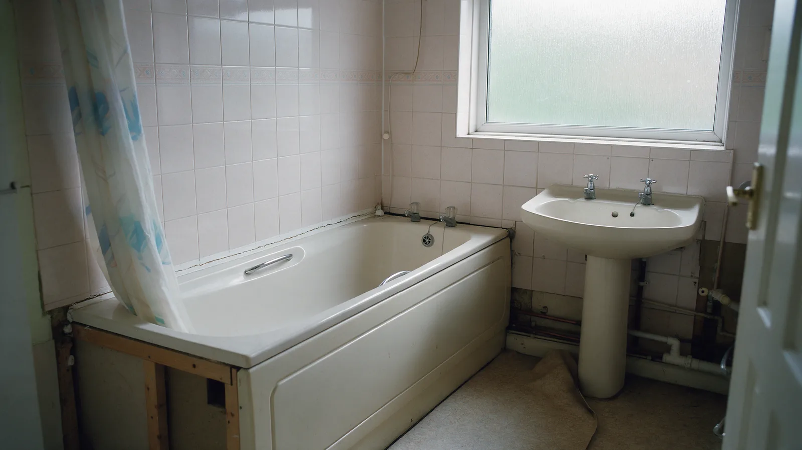
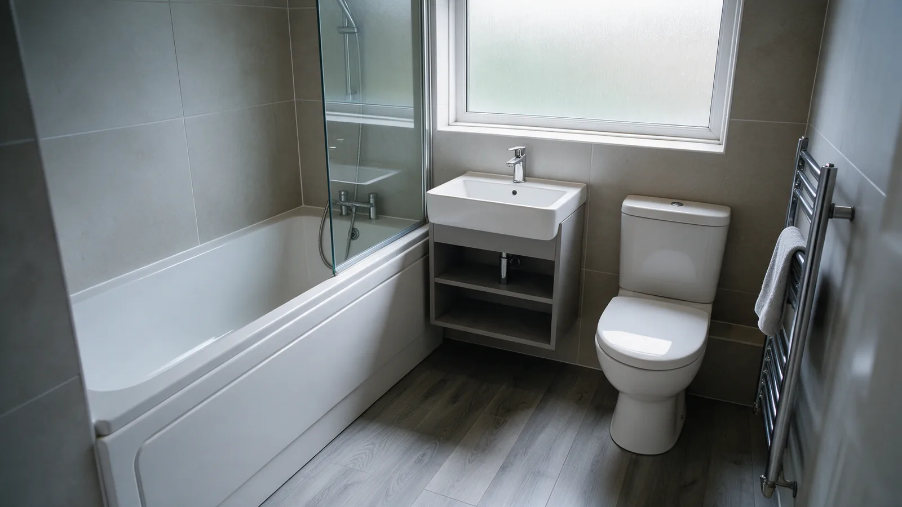

Our work
Rooms like yours.
Wrenhollow is a fictional firm, so none of this is a real job. The pictures were generated for this demo to show the kind of work, and the stages a real fitter would photograph.
10 jobs shown
 Generated photoFull bathroom refitMacclesfield · sample
Generated photoFull bathroom refitMacclesfield · sample Generated photoStripped back, day twoCongleton · sample
Generated photoStripped back, day twoCongleton · sample Generated photoFirst fix before boardingWilmslow · sample
Generated photoFirst fix before boardingWilmslow · sample
Generated photoEn suite in a box roomKnutsford · sample Generated photoBathroom turned shower roomSandbach · sample
Generated photoBathroom turned shower roomSandbach · sample Generated photoWet room, level accessMacclesfield · sample
Generated photoWet room, level accessMacclesfield · sample Generated photoAccessible bathroomWilmslow · sample
Generated photoAccessible bathroomWilmslow · sample Generated photoLarge format wall tilingCongleton · sample
Generated photoLarge format wall tilingCongleton · sample Generated photoShower tray resealedSandbach · sample
Generated photoShower tray resealedSandbach · sample
Generated photoLoose tiles put backKnutsford · sample

Illustrative, not a real job. Two generated pictures of the same room, one before and one after.
Before and after
Same room, ten days apart.
Bathrooms are the easiest before and after there is, because the window never moves. You can see exactly what the work bought and what it did not.
On a real site this is where a fitter's own pairs would sit, with the town and the month under each one.
Book a visitWant one like these?
Tell us the room and where you are. We will come out and tell you what it actually involves.